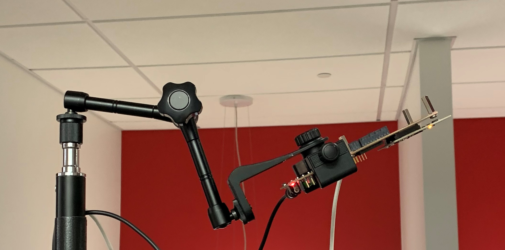
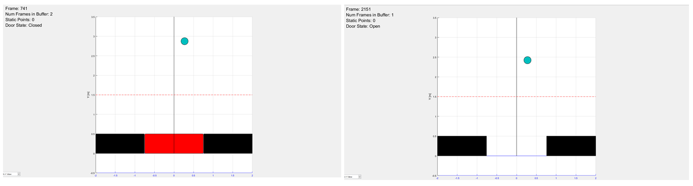
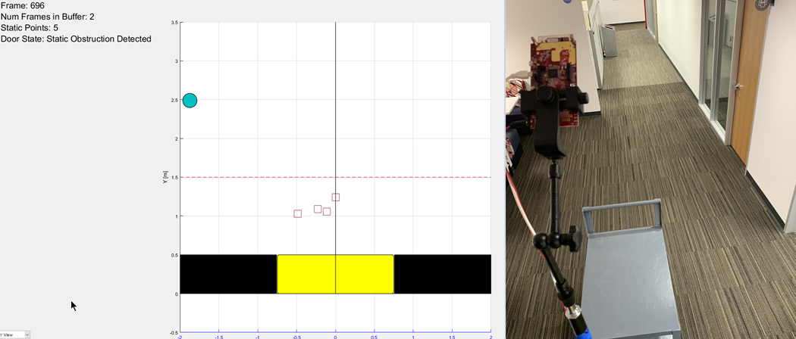

Overview
===========
This lab demonstrates the use of TI mmWave sensors in an automated door application.
Tracking algorithms are used to sense range, speed, and direction of motion to trigger the opening of a door.
Whereas traditional door sensors operate based only on proximity, this lab uses the sensor to open the door only when a person is approaching the door.
Velocity information obtained by the sensor also triggers the door to open earlier if a person is moving towards the door faster as is shown below.
This version of the lab incorporates a new static object detection algorithm to detect non-moving objects close to the sensor. The lab runs on the TI mmWave sensor using either the IWR6843ISK,the IWR6843ODS or the IWR6843AOPEVMs and includes a MATLAB visualizer.
<img src="images/landing1.gif" width="750"/>
QuickStart
===========
Precompiled binaries can be found at `C:\ti\<mmwave_industrial_toolbox_install_dir>\labs\automated_doors_and_gates\68xx_automated_doors\prebuilt_binaries`.
For quickstart you'll need to use
* Precompiled binaries for flashing the device using Uniflash
* Visualizer as .exe executable located in the `gui` folder
1. Hardware and Software Requirements
-----------
### Hardware
Item | Details
--------------------------|-----------------
Device | [IWR6843ISK](http://www.ti.com/tool/IWR6843ISK) or [IWR6843ISK-ODS](http://www.ti.com/tool/IWR6843ISK-ODS) or [IWR6843EVM](http://www.ti.com/tool/IWR6843AOPEVM) optionally with [Industrial mmWave Carrier Board](http://www.ti.com/tool/MMWAVEICBOOST).
Mounting Hardware | The EVM needs to be mounted at a height of ~2-3m with a significant downtilt. An [adjustable clamp style smartphone adapter mount for tripods](https://www.amazon.com/Vastar-Universal-Smartphone-Horizontal-Adjustable/dp/B01L3B5PBI/) and a [60-75" tripod](https://www.amazon.com/Neewer-Portable-centimeters-Camcorder-kilograms/dp/B01N6JCW8F/) can be used to clamp and elevate the EVM. This is only an example solution for mounting; other methods can be used so far as setup specifications are met.
Computer | PC with Windows 7 or 10. If a laptop is used, please use the 'High Performance' power plan in Windows.
Micro USB Cable | Due to the high mounting height of the EVM, an 8ft+ cable or USB extension cable is recommended.
Power Supply | 5V, >2.5A with 2.1-mm barrel jack (center positive). The power supply can be wall adapter style or a battery pack with a USB to barrel jack cable.
[[r! IWR6843 ES2.0 Only
This lab is only compatible with ES2.0 version of IWR6843. Check the device version on your IWR6843ISK or IWR6843ODS using the on-chip device markings as shown below>
1. If line 4 reads `678A`, you have an ES2 device. In this case, this lab is compatible with your EVM.
2. If line 4 reads `60 GHZi`, you have an older ES1 device. In this case, the lab is NOT compatible with your EVM. ES2 IWR6843ISK boards are orderable from the EVM link above.
<img src="images/iwr6843_silicon_revision.png" width="500"/>
]]
[[r! AoP ES2.0 EVM only
The IWR6843 AoP version of this lab is only compatible with ES2.0 silicon and the corresponding EVM. Please ensure your EVM is the same as in the below image.
<img src="images/iwr6843aopevm1.png" width="300"/>
]]
### Software
Tool | Version | Required For |Download Link|
----------------------------|---------------------------|---------------|-------------|
mmWave Industrial Toolbox | Latest | Contains all lab material. | [mmWave Industrial Toolbox](http://dev.ti.com/tirex/explore/node?node=AJoMGA2ID9pCPWEKPi16wg__VLyFKFf__LATEST)
TI mmWave SDK | 3.5.0 | Compile Lab | [TI mmWave SDK](http://www.ti.com/tool/MMWAVE-SDK) and all the related tools are required to be installed as specified in the mmWave SDK release notes
MATLAB Runtime | 2017a (9.2) | Quickstart Visualizer | To run the quickstart visualizer the [runtime](https://www.mathworks.com/products/compiler/matlab-runtime.html) is sufficient.
Uniflash | Latest | Quickstart
[[+d Expand for mmWave Industrial Toolbox installation without Code Composer Studio
1. Navigate to the [TI Resource Explorer](http://dev.ti.com/tirex/#/?link=Software%2FmmWave%20Sensors%2FIndustrial%20Toolbox)
2. Click the download button. A .zip file will be downloaded.
<img src="images/industrial_toolbox_download.png" width="400"/>
3. Navigate to the .zip file. Right click and then select **Extract All...**. Do NOT use the default path. The path must be `C:\ti`.
<img src="images/extract.png" width="400"/>
4. Verify installation by navigating to view the Automated Doors lab files at `C:\ti\<mmwave_industrial_toolbox_install_dir>\labs\automated_doors_and_gates\68xx_automated_doors`
+]]
[[+d Expand for mmWave Industrial Toolbox installation using Code Composer Studio
1. Open CCS
2. In the top toolbar, navigate to **View > Resource Explorer**
3. In the **Resource Explorer** side panel (not the main panel with "Welcome to.."), navigate to Industrial Toolbox at **Software > mmWave Sensors > Industrial Toolbox - <ver>**
4. With Industrial Toolbox selected, the main panel should show the Industrial toolbox landing page. Click on the **Download icon** in the right corner of panel.
<img src="images/industrial_toolbox_download.png" width="400"/>
5. Verify installation by navigating to view the Automated Doors lab files at `C:\ti\<mmwave_industrial_toolbox_install_dir>\labs\automated_doors_and_gates\68xx_automated_doors`
* +]]
2. Setup the EVM for Flashing Mode
-----------
* For MMWAVEICBOOST + Antenna Module setup: Follow the instructions for [Hardware Setup for Flashing in MMWAVEICBOOST Mode](../../../common/docs/hardware_setup/hw_setup_mmwaveicboost_mode_flashing.html)
* For IWR6843ISK or IWR6843ISK-ODS in Standalone/Modular Mode: Follow the instructions for [Hardware Setup of IWR6843ISK/ODS for Flashing Mode](../../../common/docs/hardware_setup/hw_setup_isk_ods_modular_mode_flashing.html)
* For AOP in Standalone/Modular Mode: Follow the instructions for [Hardware Setup of IWR6843AOPEVM for Flashing Mode](../../../common/docs/hardware_setup/hw_setup_aop_modular_mode_flashing.html)
3.Flash the EVM using Uniflash
-----------
Flash the binary listed below using UniFlash. Follow the instructions for [using UniFlash](../../../common/docs/software_setup/using_uniflash_with_mmwave.html)
BIN Name | Boards | Location
------------------------------|-----------------|-----------
automated_doors_68xx_demo.bin| IWR6843ISK | `<INDUSTRIAL_TOOLBOX_INSTALL_DIR>\mmwave_industrial_toolbox_<VER>\labs\automated_doors_and_gates\`<br>`68xx_automated_doors\prebuilt_binaries\isk`
automated_doors_68xx_demo.bin| IWR6843ODS | `<INDUSTRIAL_TOOLBOX_INSTALL_DIR>\mmwave_industrial_toolbox_<VER>\labs\automated_doors_and_gates\`<br>`68xx_automated_doors\prebuilt_binaries\ods`
automated_doors_68xx_demo.bin| IWR6843AOPEVM | `<INDUSTRIAL_TOOLBOX_INSTALL_DIR>\mmwave_industrial_toolbox_<VER>\labs\automated_doors_and_gates\`<br>`68xx_automated_doors\prebuilt_binaries\aop`
4. Setup the EVM for Functional Mode
-----------
* For MMWAVEICBOOST + Antenna Module setup: Follow the instructions for [Hardware Setup of MMWAVEICBOOST + Antenna Module for Functional Mode](../../../common/docs/hardware_setup/hw_setup_mmwaveicboost_mode_functional.html)
* For IWR6843ISK or IWR6843ISK-ODS in Standalone/Modular Mode: Follow the instructions for [Hardware Setup of IWR6843ISK/ODS for Functional Mode](../../../common/docs/hardware_setup/hw_setup_isk_ods_modular_mode_functional.html)
* For AOP: follow the instructions for [Hardware Setup of IWR6843AOPEVM for Functional Mode](../../../common/docs/hardware_setup/hw_setup_aop_modular_mode_functional.html)
Setup the Carrier Board in standalone mode using the S1 switch combination as shown below.
<img src="images/common/mmwaveicboost_standalone_mode.jpg" width="300"/> <img src="images/common/mmwaveicboost_standalone_jumpers.png" width="300"/>
2. Connect the EVM to the MMWAVEICBOOST board and mount the EVM vertically as shown below:
<img src="images/common/6843_evm_connectors.png" width="500" class="img-responsive"/>
3. Plug in micro-usb and power supply to EVM using the connectors shown above.
5. Physical Setup
-----------
4. For best results, the EVM should be positioned high enough to be above the top of tracked objects and with a significant down tilt.
The aim is to position the EVM so that the antenna beam can encompass the area of interest.
<img src="images/downtilt.jpg" width="700"/>
**Setup Requirements:**
* Elevate EVM: 2-3m high
* Down tilt: 70 degrees (ODS, AoP), 45 degrees (ISK)
**Setup using suggested tripod and smartphone clamp mount:**
1. Screw on clamp mount to tripod
2. Clamp EVM across its width below power barrel jack to attach EVM
3. Adjust tripod head for 45 degree down tilt (Tip: Bubble or level smartphone apps can be used to measure down tilt)
4. Plug in micro-usb and power supply to EVM
5. Extend tripod so that the EVM is elevated 2-3m from the ground
6. Position EVM and tripod assembly in desired location of room. The EVM should be positioned so that the 120 degree FOV of the EVM antenna encompasses the area of interest and points to the region in which people are expected to enter the space.

70 degree downtilt for AoP or ODS Antenna
<img src="images/IMG_8202.jpg" width="300"/>
45 degree downtilt for ISK Antenna
4. Run the Lab
-----------
To run the lab, launch and configure the visualizer which displays the detection and tracked object data received via UART.
### Launch the visualizer:
* Navigate to `C:\ti\<mmwave_industrial_toolbox_install_dir>\labs\automated_doors_and_gates\68xx_automated_doors
\gui\AutomatedDoorsVisualizer_<device_type>.exe`
* Run `AutomatedDoorsVisualizer_<device_type>.exe`
* A black console log window will appear and prompt the user for both UART and Data Ports and also angle of tilt of your EVM. An Angle of 45 degrees is recommended for ISK antenna and 70 degrees for either AoP or ODS antenna.
5. Understanding the Output
-----------
### Automated Door Functionality

The visualizer consists of a large single plot in the X-Y domain as a bird's eye view. People or moving objects that are tracked by the sensor appear as circles. The middle rectangle at the bottom of the plot is the approximate location of the sensor and is used as a model of a door. Red symbolizes the door in a closed state while the door will *open* when someone walks towards it. The software has been programmed to trigger the opening of a door when a person is within **3 seconds** of reaching it. It is worth noting that the door will only open when a person is walking towards it, it will stay closed if someone walks away from it or past it.
### Static Object Detection

Another feature of this lab is the detection of static objects that could obstruct the closing of a door. These static objects are shown as a point cloud so a larger object will have more points associated with it. In the picture above a cart has been left in front of the sensor which is clearly shown. The door has turned yellow indicating that a Static Obstruction has been detected. Static objects that are within **1.5 meters** from the sensor will trigger this state, while static objects that are more than **2 meters** from the door will not be plotted at all. For more information on the static object detection algorithm, please see the **static_object_detection_notes.pdf** the the lab **docs** folder.
### Valid Zones of Detection
The EVM antenna pattern and its field of view dictate the valid zones of detection. Either the AoP or the ODS antenna are recommended when a wider field of view directly under the sensor is needed. The ISK antenna is recommended instead when detection is needed at distances further away although the ISK antenna **cannot** detect objects directly underneath unless a very significant amount of downtilt is applied.
The below table outlines the expected zones of detection given the recommended sensor placement.
EVM Type | Sensor Height (m) | Angle of Down Tilt | Minimum Detection Range (m) | Maximum Detection Range (m) | Detection Width @ Minimum Detection Range (m)
----------------------------|---------------------------|--------------|------|--------|-------
IWR6843AoP EVM | 2.0 |70 degrees | 0.0 | 4.0 | +/- 2.0
IWR6843ODS EVM | 2.0 |70 degrees | 0.0 | 4.0 | +/- 2.0
IWR6843ISK EVM | 2.5 |45 degrees | 0.5 | 7.0 | +/- 2.0
### Expected Performance
The lab is expected to perform to the below benchmarks within the valid zones of detection. This assumes that the correct angle of downtilt is specified at run-time.
EVM Type | Position Accuracy (m) | Azimuth Angular Accuracy
----------------------------|---------------------------|--------------
IWR6843AoP EVM | 0.1 |8 degrees
IWR6843ODS EVM | 0.1 |8 degrees
IWR6843ISK EVM | 0.15 |4 degrees
Developer's Guide
===========
Build the Firmware from Source Code
-----------
### 1. Software Requirements
Tool | Version | Download Link
----------------------------|---------------------------|--------------
mmWave Industrial Toolbox | Latest | [mmWave Industrial Toolbox](http://dev.ti.com/tirex/#/?link=Software%2FmmWave%20Sensors%2FIndustrial%20Toolbox)
TI mmWave SDK | Latest | [TI mmWave SDK 3.5.x](http://software-dl.ti.com/ra-processors/esd/MMWAVE-SDK/latest/index_FDS.html) and all the related tools are required to be installed as specified in the mmWave SDK release notes
Code Composer Studio | 8.3.1 (CCS9 is not recommended) | [Code Composer Studio v8](http://processors.wiki.ti.com/index.php/Download_CCS#Code_Composer_Studio_Version_8_Downloads)
TI SYS/BIOS | 6.73.01.01 | Included in mmWave SDK installer
TI ARM Compiler | 16.9.6.LTS | Included in mmWave SDK installer
TI CGT Compiler | 8.3.3 | Version 7.4.16 must be downloaded and installed. [Download link](https://www.ti.com/licreg/docs/swlicexportcontrol.tsp?form_type=2&prod_no=ti_cgt_c6000_7.4.16_windows_installer.exe&ref_url=http://software-dl.ti.com/codegen/esd/cgt_registered_sw/C6000/7.4.16)
XDC | 3.50.08.24 | Included in mmWave SDK installer
C64x+ DSPLIB | 3.4.0.0 | Included in mmWave SDK installer
C674x DSPLIB | 3.4.0.0 | Included in mmWave SDK installer
C674x MATHLIB (little-endian, elf/coff format) | 3.1.2.1 | Included in mmWave SDK installer
mmWave Radar Device Support Package | 1.6.1 or later | Upgrade to the latest using CCS update process (see SDK user guide for more details)
TI Emulators Package | 7.0.188.0 or later | Upgrade to the latest using CCS update process (see SDK user guide for more details)
Uniflash | Latest | Uniflash tool is used for flashing TI mmWave Radar devices. [Download offline tool](http://www.ti.com/tool/UNIFLASH) or use the [Cloud version](https://dev.ti.com/uniflash/#!/)
### 2. Import Lab Project
To import the source code into your CCS workspace, CCS projects are provided for the mmWave SDK Out-of-box demo in the mmWave Industrial Toolbox.
[[b! Project Workspace
When importing projects to a workspace, the files are LINKED into the workspace. It is important to note that modifying the files in the CCS workspace will also affect the source files.
Practice version control in the case that revisions need to be reverted.]]
- Start CCS and setup workspace as desired.
- Import the project(s) specified below to CCS. See instructions for importing [here](../../../../docs/readme.html#import-ccs-projects-from-the-mmwave-industrial-toolbox-into-code-composer-studio)
Project Name | Location in Industrial Toolbox
-------------------------|-----------------------------
automated_doors_68xx_dss | Do not import. Automatically imported with mss project.
automated_doors_68xx_mss | `<INDUSTRIAL_TOOLBOX_INSTALL_DIR>\mmwave_industrial_toolbox_<VER>\labs\automated_doors_and_gates\68xx_automated_doors\src`
- Verify that the import occurred without error: in CCS Project Explorer both **automated_doors_68xx_dss** and **automated_doors_68xx_mss** projects should appear.
[[r! Error during Import to IDE
If an error occurs, check that the software dependencies listed above have been installed. Errors will occur if necessary files are not installed in the correct location for importing.
]]
### 3. Build the Lab
1. Select the **automated_doors_68xx_mss** so it is highlighted. Right click on the project and select **Build Configurations** --> **Set Active** --> **isk** or **ods** based on the EVM
2. Select the **automated_doors_68xx_dss** so it is highlighted. Right click on the project and select **Build Configurations** --> **Set Active** --> **isk** or **ods** based on the EVM
3. Select the **automated_doors_68xx_mss** so it is highlighted. Right click on the project and select **Rebuild Project**. The DSS project will automatically build first and then the MSS project.
4. On successful build, the following should appear:
* **ISK:**
* In automated_doors_68xx_dss\isk, **automated_doors_68xx_dss_isk.xe674** (this is the C67x binary used for CCS debug mode)
* In automated_doors_68xx_mss\isk, **automated_doors_68xx_mss_isk.xer4f** (this is the Cortex R4F binary used for CCS debug mode) and **automated_doors_68xx_demo_isk.bin** (this is the flashable binary used for deployment mode)
* **ODS:**
* In automated_doors_68xx_dss\ods, **automated_doors_68xx_dss_ods.xe674** (this is the C67x binary used for CCS debug mode)
* In automated_doors_68xx_mss\ods, **automated_doors_68xx_mss_ods.xer4f** (this is the Cortex R4F binary used for CCS debug mode) and **automated_doors_68xx_demo_ods.bin** (this is the flashable binary used for deployment mode)
[[b! Note
Please set same Active Build Configuration for both MSS and BSS project.
]]
{{y Selecting Rebuild instead of Build ensures that the project is always re-compiled. This is especially important in case the previous build failed with errors.}}
[[r! Build Fails with Errors
If the build fails with errors, please ensure that all the software requirements are installed as listed above and in the mmWave SDK release notes.
]]
[[b! Note
As mentioned in the [Quickstart](#quickstart) section, pre-built binary files, both debug and deployment binaries are provided in the pre-compiled directory of the lab.
]]
### 4. Execute the Lab
There are two ways to execute the compiled code on the EVM:
* Deployment mode: the EVM boots autonomously from flash and starts running the bin image
* Using Uniflash, flash the **automated_doors_xwr68xx.bin** found at `<PROJECT_WORKSPACE_DIR>\automated_doors_mss_68xx\<board_type>\automated_doors_xwr68xx.bin`
* The same procedure for flashing can be use as detailed in the Quickstart [Flash the Device](#1-flash-the-device) section.
* Debug mode: enables connection with CCS while lab is running; useful during development and debugging
[[+d Expand for help with Debug mode:
The CCS debug firmware (provided with the mmWave SDK) needs to be flashed once on the EVM.
* CCS Debug method is enabled by flashing the CCS Debug Firmware (provided with the mmWave SDK) using the methods covered in the Quickstart [Flash the Device](#1-flash-the-device) section.
* Use the following image instead
Image | Location | Comment
--------------------------|----------------------------|------------------------
Meta Image 1/RadarSS | `C:\ti\mmwave_sdk_<ver>\packages\ti\utils\ccsdebug\xwr68xx_ccsdebug.bin` | Provided with the mmWave SDK
After the CCS debug firmware has been flashed, connect the EVM to CCS
* Create a target configuration (skip to "Open the target..." if config already created previously in another lab for xwr68xx)
* Go to **File > New > New Target Configuration File**
* Specify an appropriate file name (ex: IWR68xx.ccxml) and check "**Use shared location**". Click **Finish**.
* In the configuration editor window:
* Select **Texas Instruments XDS110 USB Debug Probe** for Connection
* Select **IWR6843** device as appropriate in the Board or Device text box.
* Press the **Save** button to save the target configuration.
* [Optional]: Press the **Test Connection** button to check the connection with the board.
* Open the target configuration window by going to **View > Target Configurations**.
* Under **User Defined** configurations the target configuration previously created should appear.
* Right click on the target configuration and select **Launch Select Configuration**. The target configuration will launch in the **Debug Window**.
<img src="images/target_config.png" width="350"/>
* Connect to Cores
* Select the **Texas Instruments XDS110 USB Debug probe/C674X_0**, then right click and select **Connect Target**
* Select the **Texas Instruments XDS110 USB Debug probe/Cortex_R4_0** and then right click and select **Connect Target**
* Load the binary
* Once both targets are connected, click on the `C674X_0` target and then click **Load** button in the toolbar. <img src="images/load_program_icon.png" width="40"/>
<img src="images/load_program.png" width="500"/>
* In the **Load Program** dialog, press the **Browse Project** button .
* Select the **`automated_doors_68xx_dss_<isk/ods>.xe674`** file for your device found at the location `<CCS_PROJECT_WORKSPACE_DIR>\automated_doors_68xx_dss\<isk/ods>\` and press **Ok**.
* Press **Ok** again in the **Load Program** dialog.
* Repeat the above Load the Binary process for the `Cortex_R4_0` target, selecting instead the **`automated_doors_68xx_dss_<isk/ods>.xer4f`** for your device found in the location ``<CCS_PROJECT_WORKSPACE_DIR>\automated_doors_68xx_dss\<isk/ods>\` and press **Ok**.
<img src="images/load_program2.png" width="500"/>
* Run the binary
* Select **Texas Instruments XDS110 USB Debug probe/Cortex_R4_0**, press the **Run/Resume** button <img src="images/run_resume_icon.png" width="30"/>
* Repeat above step for the **Texas Instruments XDS110 USB Debug probe/C674X_0**
* The program should start executing and generate console output as shown.
<img src="images/ccsdebug_console.png" width="400"/>
[[g! Successful Run Binary
If binary is running correctly, the Console will include the “CLI is operational” message which indicates that the program is ready and waiting for the sensor configuration.
After executing the lab using either method, the lab can be visualized using the [Quick Start GUI](#2-run-the-lab-visualizer).
]]
+]]
Need More Help?
===========
* Find answers to common questions on <a href="https://e2e.ti.com/support/sensor/mmwave_sensors/w/wiki" target="_blank">mmWave E2E FAQ</a>
* Search for your issue or post a new question on the <a href="https://e2e.ti.com/support/sensor/mmwave_sensors/f/1023" target="_blank">mmWave E2E forum</a>
* See the SDK for more documentation on various algorithms used in this demo. Start at <MMWAVE_SDK_DIRECTORY>/docs/mmwave_sdk_module_documentation.html>